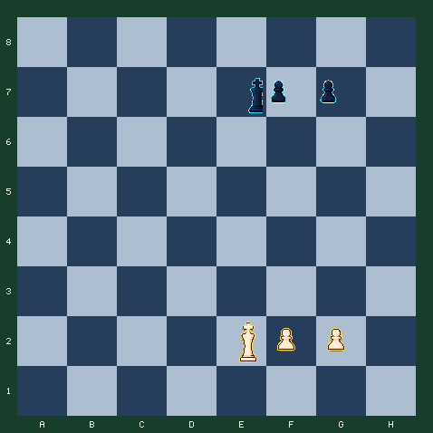

7月25日 · 晚报 · 残局
王不是观众：五步抢到关键格
没有将军也没有立即吃子，先用王取得空间，再决定兵从哪一侧制造突破。
难度 3/5 · 预计 7 分钟 · 5 次关键选择 · 主题：王兵残局的对王与关键格
故事引入
进入残局后，王从需要保护的对象变成最强的近战棋子。只会推兵的人，常常把本来能赢的局面推成和棋。
这道题的五步目标不是升变，而是先让白王取得更积极的位置，再用兵固定黑王的选择。你要学习的是残局中的先后次序。
对王是残局的语法
古典残局教材把双方王隔一格相对称为 opposition。它不是神秘定式，而是一种迫使对方先让路的节奏工具。理解对王后，很多王兵残局不再需要死记。
今日局面
白方走五步，抢占关键格并建立双兵推进。

行棋方：白方 · FEN：8/4kpp1/8/8/8/8/4KPP1/8 w - - 0 1
今日问题
五步让王先进入战场
前三步优先改善王的位置，后两步才推进兵。不要一开始就把兵推到无法回头的位置。
答案与逐步讲解
第 1 步：e2d3 · 对手回应 e7d6
第一步正确：Kd3 让王向中心靠近。残局里，王的一个格子常比兵的一步更值钱。
第 2 步：d3d4 · 对手回应 d6c6
第二步正确：Kd4 继续取得空间，迫使黑王向侧面让路。
第 3 步：d4e5 · 对手回应 c6c5
第三步正确：Ke5 抢到关键格。白王现在能支持两枚兵，而黑王被挤到侧翼。
第 4 步：f2f4 · 对手回应 g7g6
第四步正确：f4 在王的保护下推进。黑方必须决定用哪枚兵建立阻挡。
第 5 步：g2g4
第五步正确：g4 建立并排双兵。白王位置领先，后续可以根据黑方交换选择制造通路兵。
完成总结
五步完成。白王先抢关键格，再让双兵前进；局面优势来自王的位置，而不是某一次吃子。
常见错误
如果走 f2f4
立即 f4 太早。黑王还在中心，能迅速靠近兵前；先走 Kd3，把最强残局棋子带进来。
如果走 g2g4
立即 g4 同样暴露推进目标。兵不能后退，王却还能改善；优先走可逆、增益更大的王步。
复盘：先让王领先，再让兵兑现
- Kd3、Kd4 用王取得中心空间并迫使黑王让路。
- Ke5 是整个计划的关键，王开始同时支持两枚兵。
- f4、g4 在王的保护下建立并排双兵。
- 整个过程没有立即吃子，但胜率随着王的位置持续提高。
带走一句：
王兵残局先比较王的位置，再决定兵步；不可逆的兵步应该建立在王已经改善的基础上。
常见疑问
Q：为什么前三步都走王？
A：兵一旦推进不能后退，王步却能增加控制格并保留选择。先改善王，通常能让后续兵步更安全。
Q：什么叫关键格？
A：关键格是王一旦占据，就能可靠支持兵继续前进的格子。这里 e5 同时帮助 f、g 两兵。
Q：为什么两枚兵一起推进？
A：并排兵可以互相制造交换选择，王则从后方支持。单兵过早冲刺更容易被黑王封锁。
想亲自走一遍这盘棋？
点击下方链接进入互动版，可以点击或拖动走棋，每一步都有即时红绿反馈和教练讲解。
棋刻 Chess Moment · 每天三分钟，想明白一步棋